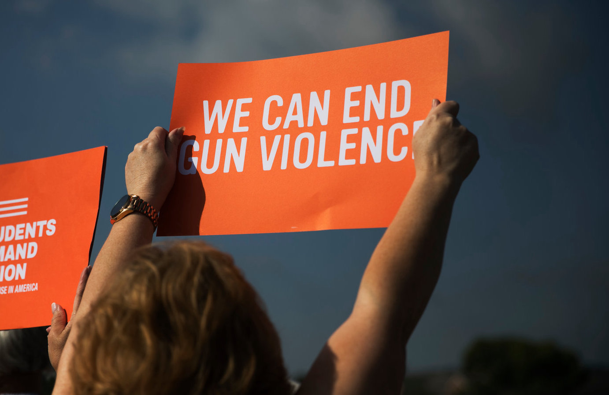

Overview of current regulations Forty-five states have a provision in their state constitutions similar to the Second Amendment to the United States Constitution, which protects the right to keep and bear arms. The exceptions are California, Maryland, Minnesota, New Jersey, and New York.
California became the first state to enact a ban on assault-style weapons in 1990. Connecticut, Delaware, Hawaii, Maryland, Massachusetts, New Jersey and New York followed suit.
Block Concealed Carry Reciprocity. Keep Guns Off Campus. Prohibit Guns in Sensitive Areas. Prohibit Open Carry. Require Permits to Carry Concealed Guns in Public. Strong Standards for Carrying Concealed Guns in Public. Victims of Crime Act (VOCA) Assistance Funding. Violence Intervention Programs.
public domain